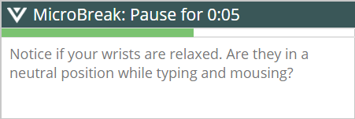
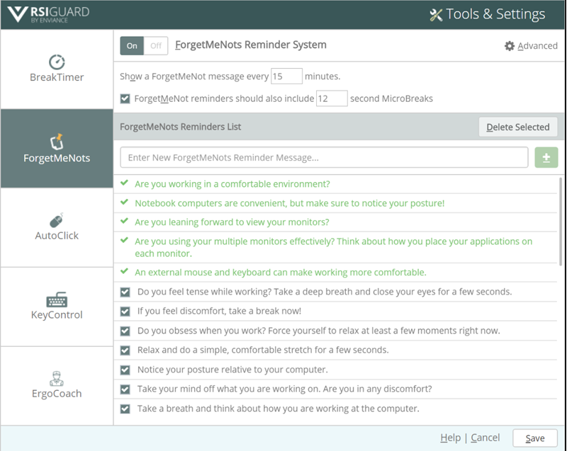
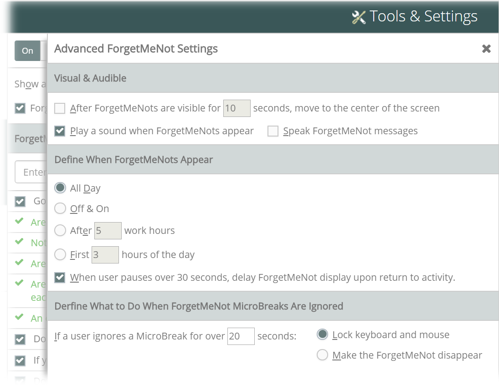

Most messages focus on helping you be aware of how you are working. This awareness can help you learn new work patterns and identify behaviors that are leading to discomfort.
Frequent short breaks between longer breaks can reduce the buildup of RSI-causing strain. To address this, you can optionally have ForgetMeNots include a suggestion for a short "microbreak".
Adjusting ForgetMeNots Settings
To adjust ForgetMeNots settings, click the  Tools menu of the main RSIGuard window. Select Settings.
Tools menu of the main RSIGuard window. Select Settings.

Then, select the ForgetMeNots tab.

ForgetMeNots and Microbreak timing
- Enabling ForgetMeNots - Click to enable or disable ForgetMeNots.
- Frequency - Select how often ForgetMeNots appear by changing the time in the Show a ForgetMeNots message every X minutes box. The recommended range is 10 to 30 minutes. Every 15 minutes is good for most users.
- Microbreaks - To include a microbreak with your ForgetMeNots message, check ForgetMeNot reminders should also include microbreaks and specify how long you want those microbreaks to be. The recommended range is 8 to 15 seconds. When reminder messages appear, you are prompted to pause. You should stop working for the specified time (e.g., 12 seconds for the settings shown above). A countdown timer will wait for you to complete the pause. The Advanced setting lets you change what RSIGuard will do if you ignore the microbreak suggestion.
ForgetMeNot Messages
The ForgetMeNots feature includes a large number of standard messages. Additional messages are added based on:
- how you configure ErgoCoach (e.g., tips on multiple monitor usage or notebook computers)
- how you work (e.g., tips based on observed work patterns)
- for Office Ergonomic Solution (OES) Assessment and Training users, messages that help you address issues identified during your ergonomic assessment
Adding, Removing and Disabling Messages
- Adding - You can add your own ForgetMeNots messages to help you remember something important. To add a message, type the message in the text box and click the button (or press Alt-Shift +).
- Deleting - You can delete a message by selecting it and clicking Delete Selected.
- Disabling - If you want a message to be available for future use, but to temporarily not appear, uncheck it. For example, you have the message, "Don't stress just because it's the end-of-the-month deadline". You may wish to uncheck this for the first 3 weeks of the month and check it for the remainder of the month.
Some ForgetMeNot messages appear in light green. These messages are placed by RSIGuard (e.g., ErgoCoach ForgetMeNots or OES) and can't be disabled or deleted from the ForgetMeNots screen. To remove these messages, either turn off the corresponding ErgoCoach feature, or for OES issues, resolve the issue in the Issue Resolution tab of My Dashboard.
Advanced Settings
Click the Advanced link to open the Advanced ForgetMeNot window.

Visual and Audible Attention Grabbers
- Move to Center of Screen - In the example above, after ForgetMeNots have been on the screen for 10 seconds and you continue typing or mousing, the message moves to the center of the screen to get your attention. If this is an unacceptable interruption to you, uncheck After ForgetMeNots are visible for 10 seconds or change the number of seconds when the message moves to the center screen.
- Play a Sound - ForgetMeNots can make a sound when new messages pop-up to help you realize the reminder message is being displayed. If you want the sound alert, check Play a sound when ForgetMeNots appear.
Define When ForgetMeNots Appear
Some people begin to ignore ForgetMeNots if they occur all working day or at regular times. You can choose when ForgetMeNots appear:
- All Day - ForgetMeNots appear all day long (e.g., every 15 minutes)
- Off & On - ForgetMeNots appear at random hours of the day (e.g., for 3 hours, they appear every 15 minutes, then none for 2 hours)
- After X hours of work - ForgetMeNots start appearing after you have worked the specified number of hours
- First X hours of day - ForgetMeNots appear for the first specified number of hours of work each day
If the When user pauses... box is checked, ForgetMeNots consider your natural rests (in addition to just considering how much time has passed) in its presentation of ForgetMeNot and microbreak reminders. If you take frequent natural pauses, you will see fewer or no ForgetMeNots
Define What to Do When ForgetMeNot MicroBreaks Are Ignored
If you enable microbreaks, you can define what should happen if you ignore the microbreak suggestion for a specified time (20 seconds in the example above). If you select Lock keyboard and mouse, a microbreak will lock you out of using the computer if you ignore the microbreak suggestion for more than 20 seconds. Otherwise, the microbreak suggestion will disappear after 20 seconds of being ignored.
You can change the default length of 20 seconds if you prefer. Note that this is not the length of the microbreak, but rather the length of time ForgetMeNots give you to start taking a suggested microbreak.